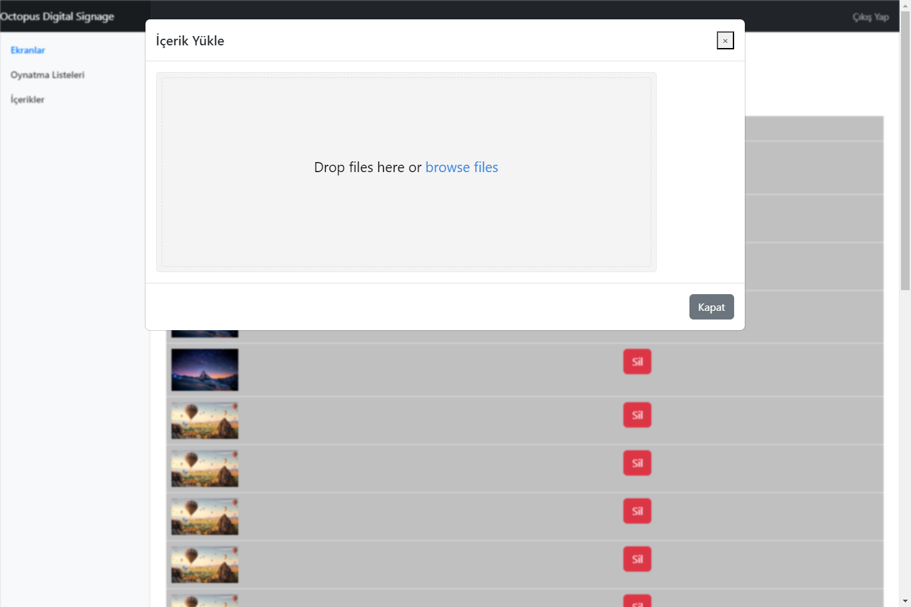

Started
Sep 25, 2023 12:04:26 AM
Ended
Sep 25, 2023 12:06:58 AM
Features Passed
7
Features Failed
2
Features
Scenarios
Steps
Timeline
Tags
| Name | Passed | Failed | Skipped | Others | Passed % |
|---|---|---|---|---|---|
| @smoke | 15 | 3 | 0 | 0 | 83.333% |
System/Environment
| Name | Value |
|---|---|
| os | Windows |
-
Kullanici Icerik Yukleyebilmeli
12:04:26 AM / 00:00:09:924 Pass
Kullanici Icerik Yukleyebilmeli
09.25.2023 12:04:26 AM 09.25.2023 12:04:36 AM 00:00:09:924 · #test-id=1PassKullanici_Icerik_YukleyebilmeliGiven Kullanici "https://octopus-panel-case.azurewebsites.net/login" adresine giderAnd Kullanici Login Olur ve Login oldugunu dogrularWhen Kullanici Icerikler alanina tiklarWhen Kullanici Icerik Yukle butonuna tiklarWhen Kullanici Masaustunden bir icerik secerWhen Kullanici Icerik Yuklendi mesajini dogrularAnd Close Driver -
Kullanici Login Olabilmelidir
12:04:36 AM / 00:00:04:622 Pass
Kullanici Login Olabilmelidir
09.25.2023 12:04:36 AM 09.25.2023 12:04:41 AM 00:00:04:622 · #test-id=11PassKullanici_Login_OlabilmelidirGiven Kullanici "https://octopus-panel-case.azurewebsites.net/login" adresine giderWhen Kullanici Kayitli Email Adresini GirerWhen Kullanici Sifre GirerWhen Kullanici Login Butonuna TiklarAnd Kullanici Anasayfada Oldugunu DogrularAnd Close Driver -
Kullanici Login Olamamalidir
12:04:41 AM / 00:00:12:085 Pass
Kullanici Login Olamamalidir
09.25.2023 12:04:41 AM 09.25.2023 12:04:53 AM 00:00:12:085 · #test-id=20PassKullanici_Login_OlamamalidirGiven Kullanici "https://octopus-panel-case.azurewebsites.net/login" adresine giderWhen Kullanici Email alanini bos birakirWhen Kullanici Sifre GirerWhen Kullanici Login Butonuna TiklarAnd Kullanici Hata Aldigini dogrularAnd Close DriverPassKullanici_Login_OlamamalidirGiven Kullanici "https://octopus-panel-case.azurewebsites.net/login" adresine giderWhen Kullanici @ simgesi kullanmadan Email girerWhen Kullanici Sifre Alanlarini Bos BirakirWhen Kullanici Login Butonuna TiklarAnd Kullanici Hata Aldigini dogrularAnd Close DriverPassKullanici_Login_OlamamalidirGiven Kullanici "https://octopus-panel-case.azurewebsites.net/login" adresine giderWhen Kullanici @ simgesi kullanmadan Email girerWhen Kullanici Sifre GirerWhen Kullanici Login Butonuna TiklarAnd Kullanici Hata Aldigini dogrularAnd Close Driver -
Kullanici Oynatma Listesi Ekleyebilmeli
12:04:53 AM / 00:00:34:324 Pass
Kullanici Oynatma Listesi Ekleyebilmeli
09.25.2023 12:04:53 AM 09.25.2023 12:05:27 AM 00:00:34:324 · #test-id=45PassKullanici_Oynatma_Listesi_EkleyememeliGiven Kullanici "https://octopus-panel-case.azurewebsites.net/login" adresine giderAnd Kullanici Login Olur ve Login oldugunu dogrularWhen Kullanici Oynatma Listeleri Butonuna TiklarWhen Kullanici Oynatma Listesi Ekle Butonuna TiklarWhen Kullanici Oynatma Listesi Adi GirerWhen Kullanici Gorsel Eklemeden Kaydet Butonuna TiklarThen Kullanici Hata Mesaji AlirAnd Close DriverPassKullanici_Oynatma_Listesi_EkleyememeliGiven Kullanici "https://octopus-panel-case.azurewebsites.net/login" adresine giderAnd Kullanici Login Olur ve Login oldugunu dogrularWhen Kullanici Oynatma Listeleri Butonuna TiklarWhen Kullanici Oynatma Listesi Ekle Butonuna TiklarWhen Kullanici Oynatma Listesi Adi Giremeden ve Gorsel Eklemeden Kayit Et Butonuna TiklarThen Kullanici Hata Mesaji AlirAnd Close DriverPassKullanici_Oynatma_Listesi_EkleyebilmeliGiven Kullanici "https://octopus-panel-case.azurewebsites.net/login" adresine giderAnd Kullanici Login Olur ve Login oldugunu dogrularWhen Kullanici Oynatma Listeleri Butonuna TiklarWhen Kullanici Oynatma Listesi Ekle Butonuna TiklarWhen Kullanici Oynatma Listesi Adi GirerWhen Kullanici Gorsel Ekle butonuna tiklarAnd Kullanici Gorsel Secer ve Gorselleri Ekle Butonuna TiklarAnd Kullanici Kayit Et Butonuna tiklarThen Kayit Edildi Mesajini DogrularAnd Close Driver -
Kullanici Oynatma Listesi Düzenleyebilmeli
12:05:02 AM / 00:00:20:538 Fail
Kullanici Oynatma Listesi Düzenleyebilmeli
09.25.2023 12:05:02 AM 09.25.2023 12:05:23 AM 00:00:20:538 · #test-id=65FailKullanici_Oynatma_Listesi_DüzenleyebilmeliGiven Kullanici "https://octopus-panel-case.azurewebsites.net/login" adresine giderAnd Kullanici Login Olur ve Login oldugunu dogrularWhen Kullanici Oynatma Listeleri Butonuna TiklarWhen Kullanici Oynatma Listesileri Arasindan Random Birinin Duzenle Butonuna TiklarAnd Kullanici Kayit Et Butonuna tiklarThen Kayit Edildi Mesajini DogrularAnd Close DriverStep skippedhooks_ui.Hooks_Ui.tearDownScenarios(io.cucumber.java.Scenario)failed_scenario_Kullanici_Oynatma_Listesi_Düzenleyebilmeli -
Register_Positive
12:05:27 AM / 00:00:02:955 Pass
Register_Positive
09.25.2023 12:05:27 AM 09.25.2023 12:05:30 AM 00:00:02:955 · #test-id=87PassKullanici Kayit OlabilmelidirGiven Kullanici "https://octopus-panel-case.azurewebsites.net/login" adresine giderWhen Kullanici Kayit Ol butonuna tiklarWhen Kullanici İsim Soyisim girerWhen Kullanici Email girerWhen Kullanici Sifre girerWhen Kullanici Sifre Tekrar girerWhen Kullanici Register Kayit Ol butonuna tiklarThen Kullanici Kayit Oldugunu dogrular -
Register_Negative
12:05:30 AM / 00:00:10:681 Pass
Register_Negative
09.25.2023 12:05:30 AM 09.25.2023 12:05:41 AM 00:00:10:681 · #test-id=98PassKullanici Kayit OlamamalidirGiven Kullanici "https://octopus-panel-case.azurewebsites.net/login" adresine giderWhen Kullanici Kayit Ol butonuna tiklarWhen Kullanici Isim Soyisim alanini bos birakirWhen Kullanici Email girerWhen Kullanici Sifre girerWhen Kullanici Sifre Tekrar girerWhen Kullanici Register Kayit Ol butonuna tiklarThen Kullanici Hata Aldigini dogrularAnd Close DriverPassKullanici Kayit OlamamalidirGiven Kullanici "https://octopus-panel-case.azurewebsites.net/login" adresine giderWhen Kullanici Kayit Ol butonuna tiklarWhen Kullanici İsim Soyisim girerWhen Kullanici Email alanini bos birakirWhen Kullanici Sifre girerWhen Kullanici Sifre Tekrar girerWhen Kullanici Register Kayit Ol butonuna tiklarThen Kullanici Hata Aldigini dogrularAnd Close DriverPassKullanici Kayit OlamamalidirGiven Kullanici "https://octopus-panel-case.azurewebsites.net/login" adresine giderWhen Kullanici Kayit Ol butonuna tiklarWhen Kullanici İsim Soyisim girerWhen Kullanici Email girerWhen Kullanici Sifre Alanlarini Bos BirakirWhen Kullanici Register Kayit Ol butonuna tiklarThen Kullanici Hata Aldigini dogrularAnd Close DriverPassKullanici Kayit OlamamalidirGiven Kullanici "https://octopus-panel-case.azurewebsites.net/login" adresine giderWhen Kullanici Kayit Ol butonuna tiklarWhen Kullanici İsim Soyisim girerWhen Kullanici @ simgesi kullanmadan Email girerWhen Kullanici Sifre girerWhen Kullanici Register Kayit Ol butonuna tiklarThen Kullanici Hata Aldigini dogrularAnd Close Driver -
Kullanici Ekran Ekleyebilmeli
12:05:41 AM / 00:01:11:116 Fail
Kullanici Ekran Ekleyebilmeli
09.25.2023 12:05:41 AM 09.25.2023 12:06:52 AM 00:01:11:116 · #test-id=141PassKullanici_Ekran_EkleyebilmeliGiven Kullanici "https://octopus-panel-case.azurewebsites.net/login" adresine giderAnd Kullanici Login Olur ve Login oldugunu dogrularWhen Kullanici Ekranlar Butonuna TiklarWhen Kullanici Ekran Ekle Butonuna TiklarWhen Kullanici Ekran Adi GirerWhen Kullanici Yedi Haneli Ekran Kodu GirerWhen Kullanici Oynatma Listesi SecerWhen Kullanici Kayit Et Butonuna tiklarWhen Kayit Edildi Mesajini DogrularAnd Close DriverFailKullanici_Ekran_EkleyememeliGiven Kullanici "https://octopus-panel-case.azurewebsites.net/login" adresine giderAnd Kullanici Login Olur ve Login oldugunu dogrularWhen Kullanici Ekranlar Butonuna TiklarWhen Kullanici Ekran Ekle Butonuna TiklarWhen Kullanici Ekran Adi GirerWhen Kullanici Alti Haneli Ekran Kodu GirerWhen Kullanici Oynatma Listesi SecerWhen Kullanici Kayit Et Butonuna tiklarWhen Kullanici Hata Mesaji AlirAnd Close DriverStep skippedhooks_ui.Hooks_Ui.tearDownScenarios(io.cucumber.java.Scenario)failed_scenario_Kullanici_Ekran_EkleyememeliFailKullanici_Ekran_EkleyememeliGiven Kullanici "https://octopus-panel-case.azurewebsites.net/login" adresine giderAnd Kullanici Login Olur ve Login oldugunu dogrularWhen Kullanici Ekranlar Butonuna TiklarWhen Kullanici Ekran Ekle Butonuna TiklarWhen Kullanici Ekran Adi GirerWhen Kullanici Sekiz Haneli Ekran Kodu GirerWhen Kullanici Oynatma Listesi SecerWhen Kullanici Kayit Et Butonuna tiklarWhen Kullanici Hata Mesaji AlirAnd Close DriverStep skippedhooks_ui.Hooks_Ui.tearDownScenarios(io.cucumber.java.Scenario)failed_scenario_Kullanici_Ekran_Ekleyememeli -
Kullanici Ekran Bilgisi Düzenleyebilmeli
12:06:52 AM / 00:00:05:396 Pass
Kullanici Ekran Bilgisi Düzenleyebilmeli
09.25.2023 12:06:52 AM 09.25.2023 12:06:58 AM 00:00:05:396 · #test-id=178PassKullanici_Ekran_Bilgisi_DüzenleyebilmeliGiven Kullanici "https://octopus-panel-case.azurewebsites.net/login" adresine giderAnd Kullanici Login Olur ve Login oldugunu dogrularWhen Kullanici Ekranlar Butonuna TiklarWhen Kullanici Ekran Listesileri Arasindan Random Birinin Duzenle Butonuna TiklarWhen Kullanici Ekran Adini DegistirirWhen Kullanici Kayit Et Butonuna tiklarWhen Kayit Edildi Mesajini DogrularAnd Close Driver
-
@smoke
18 tests
@smoke
15 passed 3 failedStatus Timestamp TestName Pass 00:04:26 AM Kullanici_Icerik_Yukleyebilmeli Kullanici Icerik Yukleyebilmeli.Kullanici_Icerik_YukleyebilmeliPass 00:04:36 AM Kullanici_Login_Olabilmelidir Kullanici Login Olabilmelidir.Kullanici_Login_OlabilmelidirPass 00:04:41 AM Kullanici_Login_Olamamalidir Kullanici Login Olamamalidir.Kullanici_Login_OlamamalidirPass 00:04:45 AM Kullanici_Login_Olamamalidir Kullanici Login Olamamalidir.Kullanici_Login_OlamamalidirPass 00:04:49 AM Kullanici_Login_Olamamalidir Kullanici Login Olamamalidir.Kullanici_Login_OlamamalidirPass 00:04:53 AM Kullanici_Oynatma_Listesi_Ekleyememeli Kullanici Oynatma Listesi Ekleyebilmeli.Kullanici_Oynatma_Listesi_EkleyememeliPass 00:04:58 AM Kullanici_Oynatma_Listesi_Ekleyememeli Kullanici Oynatma Listesi Ekleyebilmeli.Kullanici_Oynatma_Listesi_EkleyememeliFail 00:05:02 AM Kullanici_Oynatma_Listesi_Düzenleyebilmeli Kullanici Oynatma Listesi Düzenleyebilmeli.Kullanici_Oynatma_Listesi_DüzenleyebilmeliPass 00:05:23 AM Kullanici_Oynatma_Listesi_Ekleyebilmeli Kullanici Oynatma Listesi Ekleyebilmeli.Kullanici_Oynatma_Listesi_EkleyebilmeliPass 00:05:27 AM Kullanici Kayit Olabilmelidir Register_Positive.Kullanici Kayit OlabilmelidirPass 00:05:30 AM Kullanici Kayit Olamamalidir Register_Negative.Kullanici Kayit OlamamalidirPass 00:05:31 AM Kullanici Kayit Olamamalidir Register_Negative.Kullanici Kayit OlamamalidirPass 00:05:33 AM Kullanici Kayit Olamamalidir Register_Negative.Kullanici Kayit OlamamalidirPass 00:05:38 AM Kullanici Kayit Olamamalidir Register_Negative.Kullanici Kayit OlamamalidirPass 00:05:41 AM Kullanici_Ekran_Ekleyebilmeli Kullanici Ekran Ekleyebilmeli.Kullanici_Ekran_EkleyebilmeliFail 00:05:55 AM Kullanici_Ekran_Ekleyememeli Kullanici Ekran Ekleyebilmeli.Kullanici_Ekran_EkleyememeliFail 00:06:33 AM Kullanici_Ekran_Ekleyememeli Kullanici Ekran Ekleyebilmeli.Kullanici_Ekran_EkleyememeliPass 00:06:52 AM Kullanici_Ekran_Bilgisi_Düzenleyebilmeli Kullanici Ekran Bilgisi Düzenleyebilmeli.Kullanici_Ekran_Bilgisi_Düzenleyebilmeli
-
org.openqa.selenium.NoSuchElementException
3 tests
org.openqa.selenium.NoSuchElementException
3 failedStatus Timestamp TestName Fail 00:05:07 AM Then Kayit Edildi Mesajini Dogrular Kullanici Oynatma Listesi Düzenleyebilmeli.Kullanici_Oynatma_Listesi_Düzenleyebilmeli.Then Kayit Edildi Mesajini DogrularFail 00:06:17 AM When Kullanici Hata Mesaji Alir Kullanici Ekran Ekleyebilmeli.Kullanici_Ekran_Ekleyememeli.When Kullanici Hata Mesaji AlirFail 00:06:37 AM When Kullanici Hata Mesaji Alir Kullanici Ekran Ekleyebilmeli.Kullanici_Ekran_Ekleyememeli.When Kullanici Hata Mesaji Alir